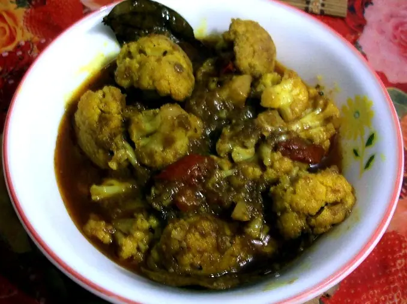

Фото: KoyeliC, CC BY-SA 4.0

Цветная капуста в духовке
Соцветия цветной капусты, запечённые со специями до румяных краёв
35 мин3 порц.209 ккал на порциюБ 7 · Ж 14 · У 13Интернациональная кухня
Продукты на 3 порц.
- Цветная капуста1 шт
- Оливковое масло3 ст. л.
- Чеснок2 зуб.
- Паприка1 ч. л.
- Куркума0,5 ч. л.
- Соль1 ч. л.
- Перец чёрный молотыйпо вкусу
- Лимон по желаниюпо вкусу
- Петрушка по желаниюпо вкусу
Как готовить
- Разогрейте духовку до 200 °C (сильный жар).
- Разберите капусту на соцветия размером с грецкий орех, промойте и тщательно обсушите полотенцем.
- Смешайте масло, рубленый чеснок, паприку, куркуму, соль и перец. Перемешайте с капустой, чтобы каждое соцветие было в масле.
- Выложите в один слой на противень с пергаментом, не плотно.
- Запекайте 25 минут, один раз перемешав в середине, пока края не станут румяными, а нож не будет входить легко.
- Сбрызните лимонным соком и посыпьте петрушкой.
Совет. Мокрая капуста в духовке тушится, а не румянится, поэтому сушите её хорошо. Вариант в кляре: обмакните отваренные 5 минут соцветия во взбитое яйцо с мукой и обжарьте на сковороде.